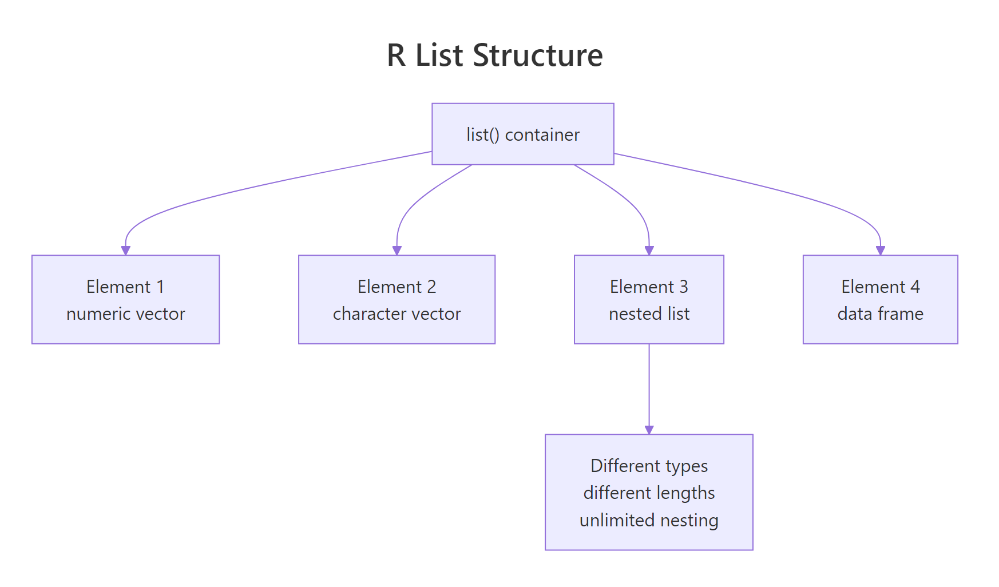

R Lists: When Data Frames Aren't Flexible Enough (Complete Guide)
A list in R is a container that can hold elements of any type, any length, and any structure — numbers next to data frames next to other lists. It's the most flexible data structure R has, and nearly every R object you'll encounter in the wild is built on top of one.
What is an R list and when do you need one?
Vectors force every element to be the same type. Data frames force every column to be the same length. Lists throw away both restrictions. Any slot can hold anything — a number, a string, a vector of 1,000 values, a linear model object, another list. That's why lm(), summary(), and virtually every statistical function returns a list.
Five elements, five different types and shapes, all in one object. No vector or data frame can hold this. That flexibility is exactly what you need when "the result of an analysis" is more than a single table.

Figure 1: A list is a sequence of named (or unnamed) slots, where each slot can point to an object of any type and size.
jsonlite::toJSON() can convert most R lists to JSON in one line.Try it: Create a list holding your name (character), three favorite numbers (vector), and TRUE.
Click to reveal solution
Each list() slot takes whatever you hand it — a single character, a three-element numeric vector, and a scalar logical coexist without forcing any type coercion. That's the whole point of a list over a vector: no common type is required.
How do you access list elements with $, [, and [[?
This is the single biggest confusion in R for beginners. Lists have three access operators, and they return different things. Let's disentangle them.
Look carefully: the second call returns the vector itself, but the third returns a list of length 1 that contains the vector. That's the rule:
[[ ]](double brackets) or$→ extracts the element itself[ ](single brackets) → returns a sub-list
Single brackets are for sub-setting a list (returning a smaller list), double brackets are for extracting (pulling one element out).
result["coefficients"] * 2 will error — you can't multiply a list. result[["coefficients"]] * 2 works because it returns a numeric vector. This mistake is responsible for about half of all "non-numeric argument" errors in R.Try it: From result, extract the residuals as a numeric vector and compute its sum.
Click to reveal solution
Double brackets pull the numeric vector straight out of the list, so sum() operates on c(-0.3, 0.1, -0.2, 0.4, 0.0) and returns a scalar. If you'd used single brackets — result["residuals"] — you would have handed sum() a length-1 list, which fails with the classic "non-numeric argument" error.
How do you add, modify, and remove list elements?
Modifying a list works like a data frame column: assign into a named slot. If the slot exists, you update it; if it doesn't, you create it. To remove, assign NULL.
Three edits, three different access styles — all valid. Pick whichever is clearest for the context.
NULL (not remove it), use result["x"] <- list(NULL). The list(NULL) wrapping is the escape hatch R provides for this edge case.Try it: Add a new element notes containing the string "looks good".
Click to reveal solution
Assigning into a name the list doesn't have (notes) appends a new slot at the end — the same syntax that modifies an existing slot creates one when it's missing. There's no separate "add" call in base R; assignment handles both cases.
How do you work with nested lists?
A list element can itself be a list — and the inner list can have its own list elements, and so on. Nested lists are everywhere: JSON responses, model outputs, configuration objects. The rule for accessing them is: chain the operators.
Both styles work. $ chains are shorter for interactive use; [[ ]] chains let you parameterize the path (e.g., experiment[["groups"]][[grp]]).
That's extracting and computing in a single expression — the everyday pattern when pulling metrics out of a results object.
Try it: Pull the standard deviation of the treatment group from experiment.
Click to reveal solution
Chaining $ descends one level at a time: first into the top-level groups list, then into the treatment sub-list, then to the scalar sd slot. Each step hands the next step a list until the final extraction pulls out the numeric value.
How do you iterate over a list with lapply() and sapply()?
When every element of a list is the same shape (say, five numeric vectors), you often want to apply a function to each one. lapply() does this and returns a list; sapply() simplifies the result to a vector or matrix when possible.
sapply() returned a named numeric vector in the first case and a matrix in the second — it picks the simplest container that fits. If you want predictability, use vapply() (you declare the return shape) or stick to lapply().
lapply() is how you write "map" in R. Once you can express an operation as "apply this function to every list element," you've internalized functional iteration and can write clean, loopless R code.Try it: Use sapply() to get the length of each element in numbers.
Click to reveal solution
sapply() walks each slot of numbers, calls length() on it, and then simplifies the three scalar results into a named numeric vector. The names come straight from the list — which is why naming your list slots pays off the moment you start iterating.
How do you flatten a list into a vector?
Sometimes you just want all the values from a list as a single flat vector. unlist() does it — walking the list recursively and concatenating everything into one vector of the most flexible type.
Notice the second example: unlist() still obeys the coercion hierarchy — mix a string in and everything becomes character. Notice also the first example: the names came from concatenating the list slot names with the inner element positions.
unlist() is destructive. You lose the list structure, and if any element was itself a complex object (like an S4 class), the result may be unexpected. Use it only when you're sure you want flat atomic values.Try it: Flatten numbers and compute its total sum.
Click to reveal solution
unlist(numbers) collapses the three slots — 1:5, 10:15, c(100, 200, 300) — into a single numeric vector of length 14, and sum() adds them: 15 + 75 + 600 = 690. The flatten-then-reduce pattern is handy when you don't care about the slot structure.
How do you convert between lists and data frames?
A data frame is a list (of equal-length columns), so converting between them is common. The key constraint: to become a data frame, list elements must all have the same length.
Going the other way — a list where elements are rows rather than columns — needs do.call(rbind, ...):
Try it: Convert columns to a data frame and print its dimensions.
Click to reveal solution
All three list elements in columns have length 4, so as.data.frame() lines them up as columns of a 4-row, 3-column data frame. dim() returns rows first, then columns — if the list elements had unequal lengths the call would have errored instead.
Practice Exercises
Exercise 1: Summary stats list
Write a function that takes a numeric vector and returns a list with n, mean, sd, min, and max.
Show solution
Exercise 2: Extract from lm() output
Fit a linear model on mtcars and pull the R² and the residual standard error from the summary() object.
Show solution
Exercise 3: Apply across a list of models
Fit three models (mpg ~ wt, mpg ~ hp, mpg ~ wt + hp) on mtcars, store them in a named list, then use sapply() to get the R² of each.
Show solution
Putting It All Together
A realistic pattern: run three models, collect the results in a nested list, extract key metrics, and assemble a summary data frame.
Six lines: fit a list of models, extract three metrics via sapply(), assemble into a summary table. This pattern — list of models → apply → data frame — scales to dozens of models or cross-validation folds without changing shape.
Summary
| Task | Syntax |
|---|---|
| Create | list(a = 1, b = "two", c = 1:5) |
| Extract element | lst$a, lst[["a"]] |
| Sub-list | lst["a"] or lst[c("a", "b")] |
| Modify | lst$a <- new_value |
| Remove | lst$a <- NULL |
| Iterate | lapply(lst, f) or sapply(lst, f) |
| Flatten | unlist(lst) |
| To data frame | as.data.frame(lst) (equal-length elements) |
References
- R Language Definition — List objects
- Advanced R — Lists by Hadley Wickham
- An Introduction to R — Lists and data frames
- R for Data Science — Iteration — modern alternatives with
purrr - R Inferno — Chapter 8: Believing it does as intended by Patrick Burns —
[vs[[gotchas
Continue Learning
- R Data Frames: Every Operation You'll Need — the tabular cousin of lists.
- R Vectors: The Foundation of Everything in R — the building blocks that go inside list slots.
- R Data Types: Which Type Is Your Variable? — the types a list can hold.